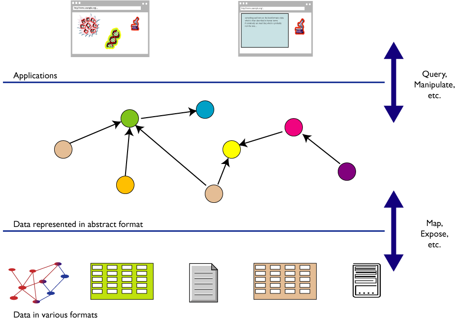
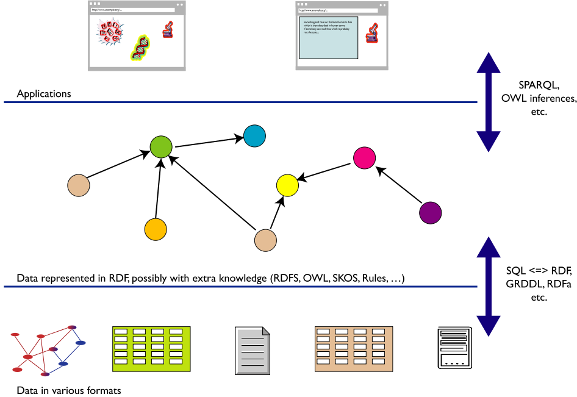
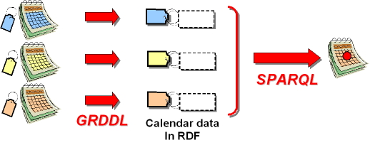
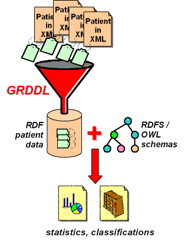
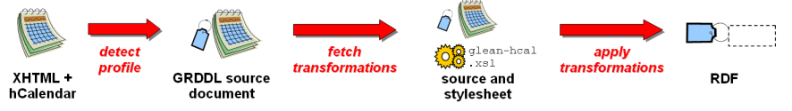
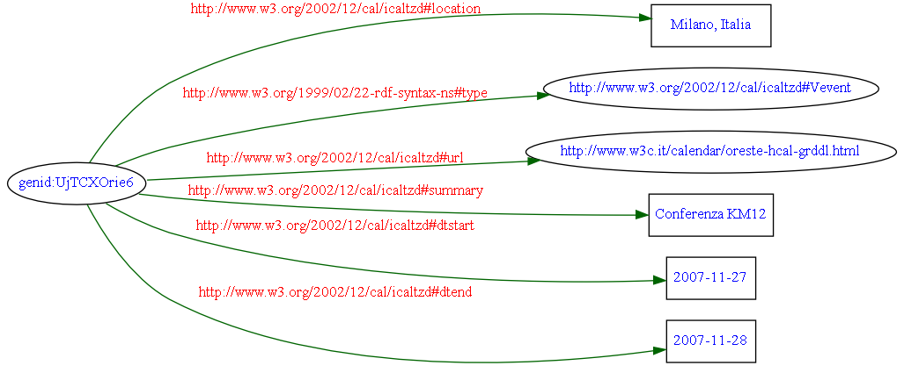

Ringraziamenti
- Questa presentazione utilizza anche materiale:
- predisposto da Ivan Herman (W3C
Semantic Web Activity Lead)
- contenuto nella documentazione tecnica
W3C
- Il materiale di questa presentazione può
essere riutilizzato nel rispetto dei diritti di
proprietà intellettuale, secondo la normale
prassi scientifica, e delle regole del
W3C
- Un ringraziamento a Jekpot per avermi
offerto l' opportunità di tenere questa
presentazione
Knowledge creation: integrazione di HTML e Semantic Web
Web e W3C
Il Web è ambiente sociale
“The Web is more a social creation than
a technical one. I designed it for a social effect - to
help people work together - and not as a
technical toy. The ultimate goal of the Web is to
support and improve our weblike existence in
the world.”
(Tim Berners-Lee - Weaving the Web, p. 123)
World Wide Web Consortium (W3C)

“To lead the World Wide Web to its full potential
by developing protocols and guidelines that ensure
long-term growth for the Web”
- Fondato da Tim Berners-Lee in 1994
- Definisce Recommendation aperte (Web
Standards)
-
È un forum neutrale per creare consenso
sugli standard web
- Gli standard proposti non derivano da posizioni
dominanti sul mercato
- Gli obiettivi a lungo termine
-
Web for Everyone
-
Web on Everything
-
Knowledge Base, Advanced data searching and
sharing
-
Trust and Confidence
Knowledge creation: integrazione di HTML e Semantic Web
Condividere la
conoscenza
L' integrazione dei dati

I limiti del Web attuale
- Nel web tradizionale si rappresenta l'
informazione utilizzando:
- linguaggio naturale
- grafica, elementi multimediali, struttura della
pagina
- Spesso è necessario combinare le
informazioni (provenienti da fonti diverse)
-
Per gli esseri umani è facile ...
- dedurre fatti da informazioni incomplete
- creare e seguire associazioni mentali
- provare varie esperienze sensoriali
- aggregare le informazioni indipendentemente dalle
tecnologie utilizzate
- ... ma le macchine non sono intelligenti!
- non possono utilizzare informazioni parziali
- hanno difficoltà ad aggregare informazioni
strutturate in forma diversa
L' architettura del Semantic Web

-
Il Semantic Web ...
-
- è un' infrastruttura basata su metadati
per poter svolgere ragionamenti sul Web
-
estende, non sostituisce il web attuale
-
I metadati sono:
-
- Informazioni, elaborabili automaticamente
(machine understandable), relative a una
risorsa web o a qualche altra cosa
- ... data about data
- ... informazioni che possono essere utilizzate da
intelligent software agents per fare un uso
appropriato delle risorse
- ... dati ...
- ... che possono essere descritti da altri
metadati ...
Perché i metadati?
- Nel Web di oggi tutte le informazioni sono "
machine readable"
- Nel Semantic Web le informazioni devono essere "
machine understandable". Quindi occorrono:
-
nomi non ambigui per le risorse (URI)
- un data model condiviso per esprimere i
metadati (RDF)
- un modo per accedere ai metadati sul Web
-
vocabolari condivisi (ontologie)
Cos'è un' ontologia?
Jim Hendler
A set of knowledge terms, including the
vocabulary, the semantic interconnections and
some simple rules of inference and logic for
some particular topic
Studer et al. (1998)
An ontology is a formal, explicit specification of a
shared conceptualisation.
A 'conceptualisation' refers to an abstract
model of some phenomenon in the world by having
identified the relevant concepts of that
phenomenon.
'Explicit' means that the type of concepts
used, and the constraints on their use are explicitly
defined. For example, in medical domains, the concepts
are diseases and symptoms, the relations between them
are causal and a constraint is that a disease cannot
cause itself.
'Formal' refers to the fact that the ontology
should be machine readable, which excludes natural
language.
'Shared' reflects the notion that an ontology
captures consensual knowledge, that is, it is not
private to some individual, but accepted by a group.
Disaccordo o accordo?
- Molte definizioni diverse, ma
accordo sul concetto
- Un' ontologia include non solo i termini che sono
esplicitamente definiti in essa, ma anche la
conoscenza che ne può essere
derivata mediante un processo di
inferenza
- Un' ontologia cattura conoscenza consensuale
- "Little semantics goes a long way" (Jim
Hendler)
Il Semantic Web: le tecnologie W3C
-
Resource Description Framework (RDF)
-
- strumento base per la codifica, lo
scambio e il riutilizzo di metadati
strutturati
- consente l'interoperabilità tra
applicazioni che si scambiano sul web informazioni
machine-understandable
-
Web Ontology Language (OWL)
-
- linguaggio per descrivere
proprietà, vincoli, cardinalità, etc.
- permette di esportare ontologie in modo
interoperabile
L' integrazione dei dati: il ruolo delle tecnologie

Knowledge creation: integrazione di HTML e Semantic Web
Come creare i metadati?
Dove sono i metadati?
- I metadati sono già nelle pagine
(X)HTML
- eventi, persone, localizzazione geografica,
didascalie, copyright, etc.
- es: agendaOreste
- Normalmente espressi in maniera:
-
comprensibile agli esseri umani
-
non comprensibile per le macchine
- i tag tradizionali non hanno semantica
Il Web 2.0 e il "mashup"
- Molte applicazioni si basano sull' uso combinato di
varie tipologie di dati
- Si sono sviluppate pratiche "sociali"
- Gli sviluppatori hanno trovato utile
"taggare" le informazioni
- Molte informazioni possono essere catturate mediante
i "Microformati"
- È possibile condividere la conoscenza
Come includere i metadati nelle pagine HTML?
-
Microformati
-
- approccio web-based alla formattazione
dei dati
-
riutilizza come metadati il contenuto
esistente
-
embedded RDF
-
- si inserisce nell' (X)HTML un sottoinsieme di
RDF
-
RDFa
-
- si esprimono i dati strutturati usando gli
attributi RDF e alcuni nuovi
attributi definiti ad hoc
Un esempio di microformato
-
Con il markup tradizionale
-
<div>
<div>Oreste Signore</div>
<div>Ufficio Italiano W3C - CNR</div>
<div>+39 (050) 315 2995</div>
<a href="http://www.w3c.it/">http://www.w3c.it/</a>
</div>
-
Con il formato di markup hCard
-
<div class="vcard">
<div class="fn">Oreste Signore</div>
<div class="org">Ufficio Italiano W3C - CNR</div>
<div class="tel">+39 (050) 315 2995</div>
<a class="url" href="http://www.w3c.it/">http://www.w3c.it/</a>
</div>
Knowledge creation: integrazione di HTML e Semantic Web
GRDDL: esempi
GRDDL
-
Gleaning Resource Descriptions from Dialects
of Languages (GRDDL), W3C Recommendation
11 September
2007
- Vedi il comunicato stampa: http://www.w3c.it/pr/2007/grddl-pressrelease-it.html
- È il ponte per trasformare i dati
espressi in un formato XML (come XHTML) in dati Semantic
Web
- Un software può automaticamente estrarre
l'informazione da pagine Web strutturate, per
renderla parte del Semantic Web
- Chi utilizza dati strutturati con microformati in
XHTML può aumentarne il valore trasferendoli nel
Semantic Web, con costi minimi
- Una volta che i dati sono parte del Semantic Web,
possono essere fusi con altri dati (per esempio,
una base di dati relazionale) per query, inferenze, e
conversione ad altri formati
- Introduce un markup per dichiarare che un
documento XML include dati che possono essere
estratti, e per indicare quale algoritmo,
normalmente scritto in XSLT, va utilizzato per estrarre i
dati RDF dal documento
Combinare agende
-
Il problema
-
- Un utente utilizza un calendaring
service che pubblica la sua agenda sotto forma
di feed RSS 1.0
- Vuole organizzare un incontro con tre
colleghi che vivono in altre città, ma seguono
spesso le stesse conferenze.
- Supponiamo che ognuno di questi
pubblichi la sua agenda personale,
utilizzando meccanismi diversi (microformato
hCalendar, eRDF e RDFa).
-
La soluzione
-

- Tutte le agende possono essere utilizzate come
input per GRDDL e convertite in RDF
- Un GRDDL-aware agent identifica le
trasformazioni necessarie per estrarre
automaticamente i dati
- I dati vengono caricati in un RDF store
e combinati in un unico modello
- Il modello risultante può essere
interrogato con SPARQL (Simple Protocol And RDF
Query Language)
Accesso a dati clinici

- Ricercatore nel settore biomedico
- Ambiente decentralizzato
- Necessità di accedere ai dati clinici dei
pazienti, memorizzati in formato XML
- Proficuo utilizzare delle query RDF per le
sue attività di ricerca
- La conversione dei dati XML in grafi RDF permette di
avere accesso alla conoscenza contenuta in
ontologie come HL7…
- …ma pone problemi di elaborazione,
spazio e sincronizzazione
- Con l' approccio GRDDL è possibile
affrontare questi problemi:
- per ogni tipo di documento sorgente viene
definita una trasformazione che estrae i
dati clinici e li rappresenta in RDF
- utilizzo di un vocabolario universale,
…quindi…
-
integrazione dei dati e
interoperabilità
GRDDL con i microformati: la tecnica
<!DOCTYPE html PUBLIC "-//W3C//DTD XHTML 1.1//EN" "http://www.w3.org/TR/xhtml11/DTD/xhtml11.dtd">
<html xmlns="http://www.w3.org/1999/xhtml" xml:lang="it" lang="it">
<head profile="http://www.w3.org/2003/g/data-view">
<title>Agenda Oreste Signore</title>
<link rel="transformation" href="http://www.w3.org/2002/12/cal/glean-hcal"/>
</head>
<body>
<ol class="schedule">
<li>2006
[…]
</li>
<li>2007
<ol>
[…]
<li class="vevent">
<strong class="summary">Conferenza KM12</strong> in
<span class="location">Milano, Italia</span>: da
<abbr class="dtstart" title="2007-11-27 09:00">27 nov</abbr> a
<abbr class="dtend" title="2007-11-28 17:00">28 nov</abbr>
</li>
</ol>
</li>
</ol>
</body>
</html>
GRDDL con i microformati: il meccanismo di trasformazione

- elemento
profile: indica che il software
che riceve il documento può cercare una
trasformazione da eseguire sui dati tra quelle
specificate nell' elemento link
- elemento
link con attributo
rel="transformation": specifica la
trasformazione da usare
- vedi: http://esw.w3.org/topic/CustomRdfDialects
- Esempio: l'agenda vista con un
GRDDL-aware agent (esempio con Firefox e plugin
Operator 0.8)
La trasformazione in RDF …
Comprensibile alle macchine, non pensata per esseri
umani!
<?xml version="1.0" encoding="UTF-8" ?>
<rdf:RDF xmlns:_6="http://www.w3.org/2002/12/cal/icaltzd#"
xmlns:rdf="http://www.w3.org/1999/02/22-rdf-syntax-ns#">
<rdf:Description rdf:nodeID="jTCXOrie6">
<_6:location xml:lang="it">Milano, Italia</_6:location>
<rdf:type rdf:resource="http://www.w3.org/2002/12/cal/icaltzd#Vevent" />
<_6:url rdf:resource="http://www.w3c.it/calendar/oreste-hcal-grddl.html" />
<_6:summary xml:lang="it">Conferenza KM12</_6:summary>
<_6:dtstart rdf:datatype="http://www.w3.org/2001/XMLSchema#date">2007-11-27</_6:dtstart>
<_6:dtend rdf:datatype="http://www.w3.org/2001/XMLSchema#date">2007-11-28</_6:dtend>
</rdf:Description>
</rdf:RDF>
…e il grafo RDF risultante

Knowledge creation: integrazione di HTML e Semantic Web
Riflessioni e
conclusioni
Conclusioni
- Il Semantic Web è un' evoluzione del
web attuale che apre prospettive enormi e
facilita la condivisione della conoscenza
- Molta conoscenza è già
contenuta nelle pagine web esistenti
- Approcci come GRDDL consentono di
estrarre questa conoscenza e renderla parte
integrante del Semantic Web
- Il W3C guida l' evoluzione del Web: attori o
spettatori?
Non chiedetevi:
cosa può fare il web per
me?
…ma…
cosa posso fare io per il
Web?
 … e il supporters
program
… e il supporters
program